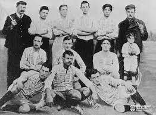
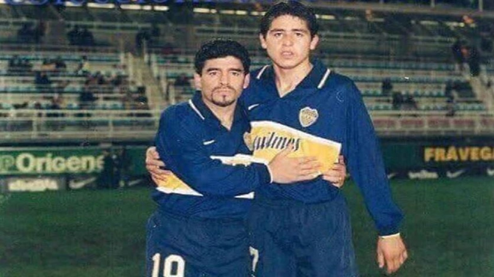
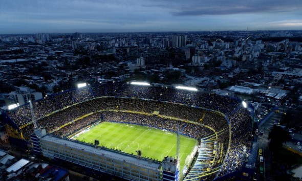

La fundación del club Boca Juniors
En el vibrante barrio de La Boca, Buenos Aires, nació el Club Atlético Boca Juniors el 3 de abril de 1905. Fundado por un grupo de inmigrantes italianos apasionados por el fútbol, el equipo adoptó los colores azul y oro que se han convertido en su sello distintivo.
A lo largo de los años, Boca Juniors ha forjado una historia legendaria en el fútbol. En las décadas de 1920 y 1970, el club alcanzó la prominencia nacional e internacional, ganando numerosos títulos de liga y copas. Jugadores icónicos como Diego Maradona y Juan Román Riquelme llevaron al equipo a la gloria, consolidando su estatus como uno de los mejores equipos de Argentina y del mundo.
El club no solo se destaca por sus logros en la cancha, sino también por su apasionada hinchada, que llena el estadio La Bombonera en cada partido. Boca Juniors representa la perseverancia, la unidad y la pasión por el fútbol, convirtiéndolo en un símbolo eterno del deporte argentino.